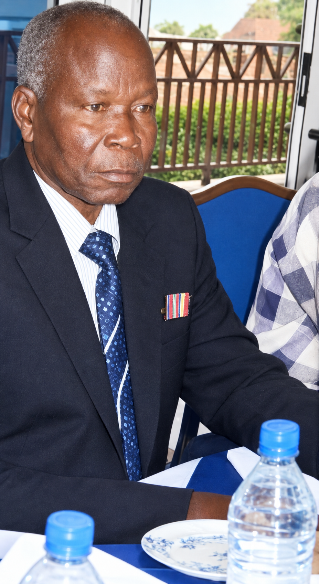

Founder & Patron
Eng. Ireneo Kunda Tabour
Founder & Visionary Patron
Eng. Ireneo Kunda Tabour is the visionary founder and patron of Ireneo Kunda Complex. Driven by a lifelong commitment to community empowerment, socio-economic progress, and youth development in South Sudan, he established the complex to deliver holistic, high-quality education from early childhood through secondary graduation in Wau.
“Education is a key to success. Our vision is to equip every child in South Sudan with the knowledge, values, and resilience to build a prosperous tomorrow.”